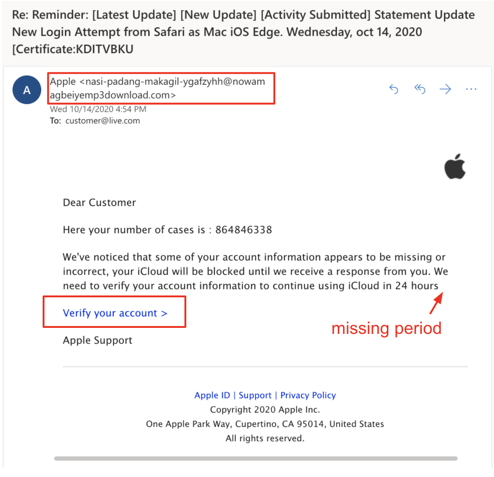

Lesson 3 - Spot the Fake
At the end of this lesson, you will be able to:
- Read a web address (URL) well enough to catch lookalike and fake domains.
- Identify warning signs in a phishing message or fake login page without treating any single sign as proof.
- Apply independent verification to QR-code scams and AI-generated voices or video.
Last lesson was about the psychology of scams. Now let's get practical and look at the actual warning signs in messages and login pages. None of these signs is perfect on its own, but together they add up to good evidence, and the most useful one of all is learning to read a web address.
Learn to read a URL
So let's learn to read a URL (a web address). If you only take one skill away from this unit, I'd make it this one. The part that matters most is the hostname: everything after https:// up to the next slash, question mark, or the end of the address. Inside the hostname, read from the right. The registered domain is the part just before the ending, like .com or .org, and that's who actually controls the site.
Why read from the right? Because of how domain names are organized, which you saw back in Unit 2. They work like a family tree that starts at the end. The .com part is the top of the tree, google is a name someone registered under .com, and accounts is a name Google chose to make under google.com. Whoever owns the name just left of the ending gets to make up anything they like to the left of it. That's exactly the loophole scammers use, as the second example shows:
https://accounts.google.com/signin→ the registered domain isgoogle.com;accountsis a subdomain.https://google.com.secure-login.ru/signin→ the registered domain issecure-login.ru, not Google. The textgoogle.comis only a subdomain chosen by the owner ofsecure-login.ru.https://paypa1.com→ that's the number1pretending to be a lowercasel. Lookalike domains like this show up in sender addresses and link text, too.
On a computer, you can hover over a link without clicking it to see where it really goes. On most phones, you can press and hold the link. If the label says one thing and the destination says another, that's a warning. And if you think an account really might need attention, it's still safer to open the official app or type in the address yourself.
Phishing tells, and the fake login page
The other warning signs are the ones from last lesson: urgency, an unexpected request for a password, a verification code, a payment, or a gift card, and a link that doesn't go where the sender says it does. Generic greetings ("Dear Customer") and typos can add to your suspicion. Typos used to be a handy tell, but these days AI tools make polished writing free, so a well-written message doesn't tell you anything either way. Here's an example with several warning signs at once:

Many phishing messages lead to a fake login page that simply records whatever you type into it. These pages can be near-perfect copies of the real sign-in screen, so check the address bar before you type a password. Even better, don't log in through a message you weren't expecting at all: open the official app, or type the site's address into a new tab yourself.
Practice identifying warning signs
Now some practice. The activity below shows you six messages modeled on the kinds that really turn up in inboxes and on phones. For each one, pick out the clear scam warning signs, or choose to verify independently when there isn't a clear sign. Then compare your answer with the explanation and the sender and destination shown. (Remember that a message can't prove by itself that it's genuine.)
(If the challenge doesn't load, open it in a new tab.)
QR codes and synthetic media
QR codes are just links you can't read until your phone scans them. That makes them handy for scammers: a fake sticker slapped over a real parking-meter code can send you to a fake payment page. So treat an unfamiliar QR code the way you'd treat an unfamiliar link, and look at where it's taking you before you go any further.
Generative AI adds a newer twist. Tools can now imitate a person's voice or face convincingly, so hearing a familiar voice on the phone, or seeing a familiar face on a video call, isn't proof of who you're talking to anymore. That's a weird thing to have to say, but it's true!
The defense that keeps working, no matter how good the fakes get, is the same one from last lesson: when a message pressures you to act quickly, pause and get in touch through a channel you already trust. Call a number you know, open the official app, or use a code word you've agreed on with your family ahead of time. Once you leave the channel the requester picked, it gets much harder for anyone to impersonate someone else.
Try it: Look at these two examples: https://paypal.com.example.org/login and https://accounts.example.org/login. For each one, find the hostname and the domain that really controls it. Then explain why seeing a familiar word somewhere in a URL doesn't tell you who sent a message. Or, if you'd rather, look at a link preview in one of your own emails without following the link, and describe your reasoning using made-up addresses.
Coming up next: We switch from scams to misinformation, and to the systems that decide what shows up in your feed.